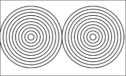

関数を作る
関数の働き
ある働きをする(機能をもつ)一連の処理をひとまとめにして、名前を付けたものが関数です。p5.jsは、描画や計算などさまざまな機能を関数として提供しています。 例えばline()は、4つの数字を受け取り、最初の2つの数字を線の一方の点の座標、3，4番目の数を他方の点の座標として、線を描きます。関数が受け取る(関数に渡す)データのことを引数(パラメータ)といいます。
line(100, 100, 200, 200); //線を描く処理を行う関数を実行するリファレンスをみると、この関数の使い方(API: Application Programming Interface)がわかります。
関数には、
・処理を行う ・値を返すという2つの仕事があり、このどちらか一方の仕事をする関数と、両方の仕事をする関数があります。
line()関数の場合、「線を描く」処理を行い、値は返しません。また、 算術関数は、値を返すだけの仕事をする関数です。 返す値のことを戻り値、または返値と呼びます。 dist()関数は2つの点の間の距離を計算して返します。次の例では、戻り値を後の処理に使うために、変数aに代入しています。
const a = dist(100, 100, 200, 200); //戻り値を使う
関数の定義
あらかじめ用意されている関数を使うだけでなく、新しく関数を定義し、 自分のプログラムに活用することができます。関数は次のような形で、定義します。
function 関数名（引数名, 引数名, .....) {
.... 処理の内容 ....
return 戻り値; //値を返す関数のみ記述
}
(1)関数名を決めます。関数名は任意ですが、その関数の機能を表す名前にしておきます。
関数名の付け方は変数名と同じで、次のようなルールがあります。
・英数字、アンダースコア(_)、ドルマーク($)を使う。先頭は数字以外。
・JavaScriptがあらかじめ使っているキーワード(予約語)は使えない。
・英数字、アンダースコア(_)、ドルマーク($)を使う。先頭は数字以外。
・JavaScriptがあらかじめ使っているキーワード(予約語)は使えない。
(2)引数は、関数名の後ろの（ ）の中に、引数につける名前をカンマでつなげて指定します。変数の宣言と同じ書き方です。引数がない場合は（ ）の中にはなにも書きません。
(3)ブロック(波括弧｛と｝の間)の中に、その関数の処理を書きます。関数に渡される引数や、関数の外で定義されているグローバル変数を使うことができます。また、このブロックの中でだけ有効な変数(ローカル変数)を宣言して、処理の途中結果を保存しながら処理をすすめることもできます。
(4)値を返す関数は、関数の実行が終わる位置にreturnを使って、戻り値を指定します。
return 返す値;
p5.jsのプログラムは、二つの関数setup()関数とdraw()関数を定義することから始まります。 次のように書いていました。どちらの関数とも引数はなく、戻り値もありません。
function setup(){
createCanvas(250,250);
}
function draw(){
// 描画関数の実行
}
新たに自分のプログラム用に関数を定義する場合も、これと同様にしていきます。次は、関数drawDoshinを定義し、setup関数の中から呼び出しています。

function setup() {
createCanvas(250,250);
noFill();
drawDoshin(50, 80, 10); // 同心円を描く関数の呼出し
drawDoshin(150, 80, 10); // 同心円を描く関数の呼出し
}
function drawDoshin(x, y, d) { // (x, y)の位置にｄの間隔で同心円を描く関数の定義
for (let i=1; i<=10; i=i+1) {
ellipse(x, y, d*i, d*i);
}
}
値を返す関数
関数が値を返すにはreturnを使います。 関数から返される値を使うか使わないかは、呼出し側が自由に決めます。使わないときは、単に無視すればいいだけです。例えば、波紋状の同心円を描く関数の仕様を次のように考えます。
function drawDoshin2(x, y, d, n, dif) 波紋状の同心円を描き、その一番大きい円の直径を返す。 x: 円のx座標 y: 円のy座標 d: 一番小さい円の直径 n: 円の個数 dif: 円が大きくなる割合、例えば1.2とすると、円の直径が2割ずつ増えるこの関数は波紋状の同心円を描く仕事と、一番大きな円の大きさを返すという仕事の両方をする関数です。
function drawDoshin2(x, y, d, n, dif) {
let w = d;
for (let i=1; i;<=n; i=i+1) {
w = w * dif;
ellipse(x, y, w, w);
}
return w;
}
returnは関数を終了して値を返す働きをします。上の例では、関数の一番最後にreturnがありますが、関数の途中にreturnがあると、それ以後の処理は行わず、そこで関数を終了します(呼出し元に戻る)。
例えば、ある条件が成り立つ時だけ、関数を終えるという場合が、これにあたります。関数の途中にreturn文を置く場合、値を返す必要がないなら、returnの後ろに値は指定しません。
return;